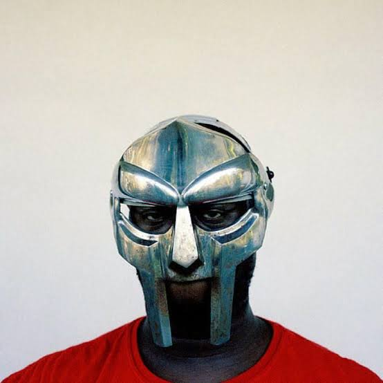

O site lirica.com consiste em um projeto estático que visa publicar e analisar a composição lírica de músicas, as quais podem representar variados gêneros e instigar interpretações diversas para suas mensagens, assim como também prestar homenagem a artistas tão influentes no cenário musical. Aproveite a navegação pelo site! Acima encontra-se a barra de navegação baseada nos gêneros presentes nos projetos. Abaixo há a tabela contendo os 5 mais procurados da semana baseado no site Rolling Stones.
| MAIS OUVIDOS | |
| 1. | MF DOOM |
| 2. | JPEGMafia |
| 3. | Hiatus Kaiyote |
| 4. | Tyler Okonma |
| 5. | Denzel Curry |
MF DOOM
Daniel Dumile, mais conhecido como MF DOOM (Londres, 13 de julho de 1971 — 31 de outubro de 2020), foi um rapper e produtor inglês influente na cena do hip hop dos anos 2000. Começou a carreira como Zev Love X no KMD e após a morte de seu irmão (Subroc), voltou para o mundo do rap como MF DOOM (posteriormente apenas DOOM). Caracterizou-se por usar uma máscara semelhante ao do personagem Doutor Destino, da Marvel Comics. Posteriormente, a Marvel exerce mais influências na carreira musical de Daniel Dumile, como nos alter egos Viktor Vaughn e Mr. Fantastik. Seu pseudônimo, MF DOOM, possui dois significados distintos ligados aos seus talentos como rapper e como produtor, sendo assim Metal Face no microfone e Metal Fingers como DJ.
JPEGMafia
.jpeg)
Barrington DeVaughn Hendricks (nascido em 22 de outubro de 1989), conhecido profissionalmente como JPEGMafia (estilizado em letras maiúsculas como JPEGMAFIA), é um rapper, cantor e produtor musical americano. Nascido na cidade de Nova York e criado em Baltimore, Maryland, ele assinou com a Republic Records para lançar seu primeiro álbum de estúdio, Black Ben Carson (2016). Ele então assinou um acordo de joint venture com Deathbomb Arc para lançar seu segundo álbum Veteran (2018), que recebeu ampla aclamação da crítica. Seu terceiro álbum, All My Heroes Are Cornballs (2019) foi lançado de forma independente e entrou na Billboard 200, enquanto ele retornou à Republic para o lançamento de seu quarto álbum LP! (2021); ambos foram recebidos com aclamação crítica contínua. Em 2023, ele lançou seu álbum de estúdio colaborativo Scaring the Hoes com o colega rapper alternativo Danny Brown.
Hiatus Kaiyote
.jpeg)
Hiatus Kaiyote é uma banda de neo-soul formada em 2011, em Melbourne, Austrália. O grupo é composto por Naomi “Nai Palm” Saalfield (vocalista, guitarrista); Paul Bender (contrabaixo); Simon Mavin (teclado); e Perrin Moss (bateria, percussão). A banda ganhou grande repercussão após um tweet do cantor Prince, contendo a frase “Não se preocupe... apenas clique” e um link redirecionando para a página do videoclipe da música “Nakamarra”. “Kaiyote” não é uma palavra. É uma palavra inventada, mas que soa parecido com peiote e coiote - é uma palavra que envolve a criatividade de quem escuta, e também como percebem. Então isso te lembra coisas, mas nada específico. Quando eu olhei para essa conexão foi como a sociedade admirando um pássaro pelo mundo todo, para mim foi um grande presságio, porque eu sou uma "lady pássaro". Um hiato é essencialmente uma pausa, é um momento no tempo. Então, para mim, um hiato é tomar uma pausa na sua vida para aproveitar o seu redor, ter uma visão panorâmica completa de suas experiências e absorver, e "kaiyote" é expressa de uma maneira que envolve a criatividade do ouvinte.
Tyler Okonma
.jpeg)
Tyler Gregory Okonma (Los Angeles, 6 de março de 1991), mais conhecido pelo seu nome artístico Tyler, The Creator, é um rapper, compositor, produtor musical, diretor de videoclipes, empresário, estilista e designer de moda. Nascido em Ladera Heights, ele ganhou destaque como o líder e co-fundador do coletivo de hip hop alternativo Odd Future,[6] tendo produzido músicas para quase todos do grupo. Tyler cria toda a arte para os lançamentos do grupo e disse em uma entrevista com o apresentador de rádio DJ Semtex, que projeta toda a roupa do grupo e outras mercadorias também. Como artista solo, Tyler lançou uma mixtape e seis álbuns de estúdio, muitas vezes responsável por quase ou toda a produção dos mesmos.
Denzel Curry
.jpeg)
Denzel Rae Don Curry (Carol City, 16 de fevereiro de 1995) é um rapper, cantor e compositor norte-americano. Curry começou a fazer rap enquanto estava na sexta série e começou a trabalhar em sua primeira mixtape em 2011, quando estava na escola. É destacado pela forte lírica em suas músicas. Influenciado pelo rapper underground da Flórida SpaceGhostPurrp, a mixtape foi apresentada mais tarde nas mídias sociais de Purrp, dando atenção local a Curry e resultando em Curry se juntando ao coletivo de hip-hop de Purrp, Raider Klan.